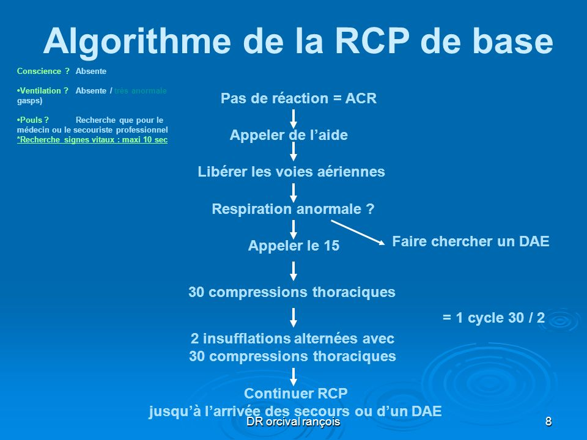
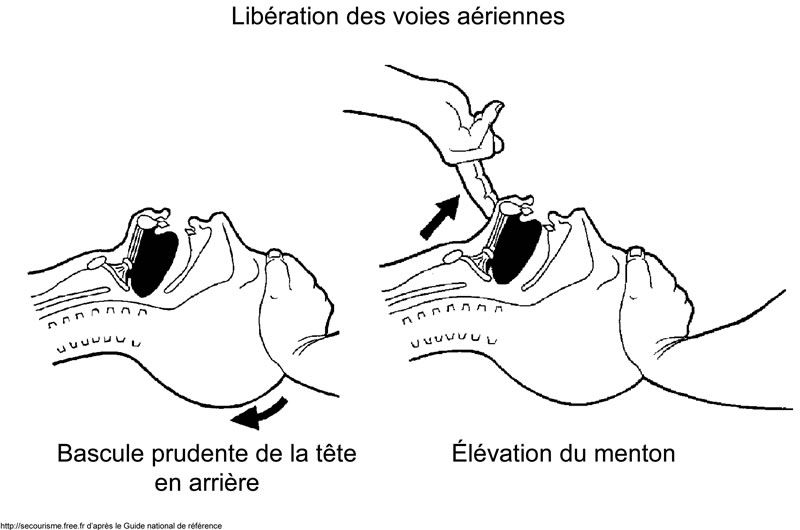
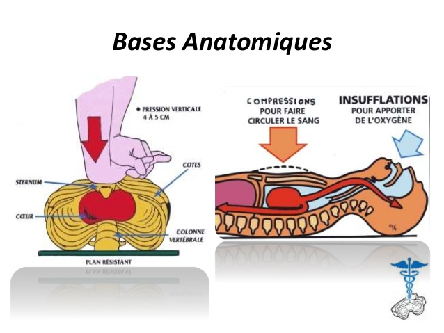
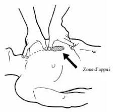

La reanimation cardio-pulmonaire de base
L'arret cardio-respiratoire
Definition
L’arret cardio-respiratoire (ACR) est une urgence vitale. C’est une incapacite du cœur a assurer un debit efficace avec une interruption immediate et brutale de la circulation sanguine dans le corps et une surpression de l'apport de sang oxygene a tous les organes : fibrillation ventriculaire ou asystolie. Il s’accompagne d’un arret ventilatoire d’une perte de connaissance et aboutit au deces du patient.
Signes cliniques
L'algorithme decisionnel s'etablit en trois etapes :

La reanimation cardio-pulmonaire de base
La reanimation cardio-pulmonaire de base (RCP de base) a pour but de retarder les lesions cerebrales en attendant l’arrivee d’une equipe medicale, elle se deroule en differentes etapes :
- Reconnaissance de l’arret cardiaque :
- Perte de connaissance.
- Absence de reactivite.
- Absence de ventilation (attention aux gasps : mouvements respiratoires saccades).
- Absence de toux.
- Absence de pouls carotidien.
- Realiser la protection : la prevention du suraccident est un prealable obligatoire a toute action de secours. Le sauveteur et la victime sont en securite.
- Apprecier l’etat de conscience : la victime est inconsciente, elle ne repond pas a une question simple et ne reagit pas quand on lui demande de serrer la main et ne reagit pas lorsqu'on lui frotte le sternum.
- Appeler a e l’aide a si vous etes seul, afin d’obtenir une aide de la part d’un temoin qui pourra aller alerter les secours apres le contrele de la respiration.
- Assurer immediatement la liberte des voies aeriennes :
- Desserrer ou degrafer rapidement tout ce qui peut gener la respiration.
- Basculer doucement la tete de la victime en arriere et elever le menton.
- Ouvrir la bouche et retirer d’eventuels corps etrangers. Garder le menton eleve.
- Apprecier la respiration pendant 10 secondes au plus : la victime ne respire pas, aucun souffle n’est pereu, aucun bruit n’est entendu, ni le ventre, ni la poitrine de la victime ne se soulevent pendant les 10 secondes que dure cette recherche.

- Faire alerter les secours : l’alerte doit etre realisee le plus tet possible, immediatement apres avoir reconnu un arret de la respiration.
- La reanimation doit commencer par le massage cardiaque externe.
- L’organisme dispose d’une reserve de sang oxygene qui ne circule pas, mais qui va circuler du fait du massage.
- Les besoins en O2 sont diminues car le debit cardiaque est bas.
- Les etudes ont montre que le massage cardiaque externe doit etre entrepris en priorite si l’arret cardiaque remonte a plus de 5 minutes.
- Masser un cœur genere une pression qui est longue a monter. Elle s’ecroule instantanement a l’arret du massage cardiaque externe. Il faut donc recommencer, ce qui peut aggraver le pronostic si on arrete trop souvent. C’est pourquoi le processus passe a 30 compressions, sans verification des pouls carotidiens ou femoraux.
- Les insufflations s'effectuent avant les compressions thoraciques seulement en cas d'anoxie (noyade, pendaison) car il n'y a plus d'oxygene circulant, ainsi que chez les enfants puisque leur reserve d'oxygene n'est pas suffisante et ils font principalement des arret cardiaque anoxique.
- Pratiquer les compressions thoraciques :
- Placer la victime sur le dos sur un plan dur si elle n’est pas deje dans cette position.
- Realiser 30 compressions sur la moitie inferieure du sternum (30 compressions pour 2 insufflations).
- Mains posees sur la partie inferieure du thorax : partie superieure de la partie inferieure du sternum (entre les mamelons).
- Mains superposees, doigts croisees, coudes verrouillees vers l'interieur (pour eviter les flechissements), epaules au-dessus des mains.
- Deprimer le thorax de 5 cm.
- Chez l’enfant et le nourrisson, 30 compressions seront realisees s'il y a un seul sauveteur, et 15 compressions s'il y a 2 sauveteurs.
- Pratiquer les insufflations :
- Realiser 2 insufflations efficaces, chacune entraenant un debut de soulevement de la poitrine :
- Utilisation d'un BAVU (Ballon Autoremplisseur a Valves Unidirectionnels).
- Ne pas pressez la totalite du ballon pour les insufflations : un BAVU a une capacite de 2,5 litres alors que le volume courant respiratoire est de 600 ml, un fermement du poing suffit.
- FiO2 (Fraction inspiree en oxygene) :
- BAVU seul = 21 % = FiO2 atmospherique.
- BAVU + bouteille O2 (debit a 15 litres/min) = FiO2 50 %.
- BAVU + bouteille O2 (debit a 15 litres/min) + reserve = FiO2 100 %.
- Technique du bouche-e-bouche ou du bouche-e-nez.
- Poursuivre les manœuvres de reanimation et surveiller leur efficacite tous les 5 cycles.
- Si les signes de circulation, dont la respiration, sont presents, installer la victime en position laterale de securite (PLS) et surveiller en permanence sa respiration. Si la respiration ou les signes de circulation s’arretent de nouveau ou en cas de doute remettre la victime sur le dos et recommencer la reanimation cardio-pulmonaire.

- Verifier que l'alerte a bien ete donnee.
Les compressions thoraciques chez l'adulte


Les compressions thoraciques chez l'enfant
Les compressions thoraciques chez le nourrisson